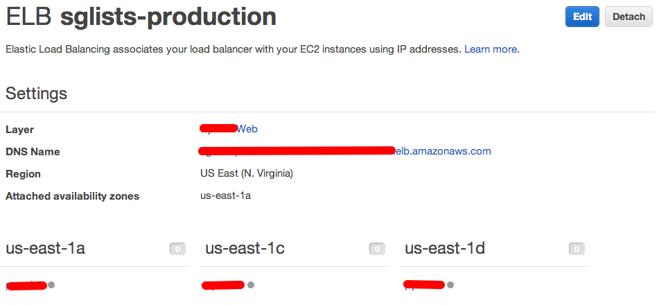

- 7+ years experience
- Linux and Databases administrator
- Web and Mobile developer (Ruby, Java, JavaScript, Objective-C, C/C++, Golang)
- Open-Source developer
- rwprecise64
- webp-ffi
- MongodbLogger for Rails
- Piro - Chrome extension for PivotalTracker
- SMTRails and SHTRails (shared templates for rails)
Alexey Vasiliev
AWS
AWS OpsWorks

AWS OpsWorks is a DevOps solution for managing applications of any scale or complexity on the AWS cloud.
AWS OpsWorks
-
Benefits
- Simple
- Productive
- Powerful
- Flexible
- Secure
- No additional charge
-
Capabilities
- Resource Configuration
- Software Configuration
- App Deployment
- Auto Healing
- Automatic Instance Scaling
- Monitoring
Components
AWS OpsWorks
Stack
AWS OpsWorks
The stack is the top-level AWS OpsWorks entity. It represents a set of instances that you want to manage collectively, typically because they have a common purpose such as serving your applications
Layer
AWS OpsWorks
A layer is essentially a blueprint for an Amazon EC2 instance. It defines which packages and applications are installed, how they are configured, and so on
Instances
AWS OpsWorks
Instances represent the EC2 instances that handle the work of serving applications, balancing traffic, and so on
Apps
AWS OpsWorks
An app represents code that you want to run on an application server
Cookbooks and Recipes
AWS OpsWorks
AWS OpsWorks is based on Chef Solo, and currently supports version 0.9 and 11.4 (usually referred to as Chef 11)
Chef Solo and Chef Server
AWS OpsWorks
Time-based Instances
AWS OpsWorks
Load-based Instances
AWS OpsWorks
Load balancers
AWS OpsWorks

Deployment
AWS OpsWorks
Monitoring
AWS OpsWorks
Lifecycle Events
Customizing AWS OpsWorks
- Setup occurs on a new instance after it successfully boots
- Configure occurs on all of the stack's instances when an instance enters or leaves the online state
- Deploy occurs when you run a deploy command, typically to deploy an application to a set of application server instances
- Undeploy occurs when you delete an app or run an undeploy command to remove an app from a set of application server instances
- Shutdown occurs after you direct AWS OpsWorks to shut an instance down but before the associated Amazon EC2 instance is actually terminated
Overriding Attributes
Customizing AWS OpsWorks
- Custom JSON – You can optionally specify custom JSON attributes when you create, update, or clone a stack, or when you deploy an application
- Stack configuration JSON – AWS OpsWorks creates this structure to hold stack configuration information that is determined by the service, including the information that you specify through the console settings
- Deployment JSON – AWS OpsWorks incorporates deployment-related attributes into the stack configuration JSON for Deploy events
- Cookbook attributes – Built-in and custom cookbooks usually include one or more attributes files, which contain attributes that represent cookbook-specific values such as application server configuration settings
- Chef – Chef's Ohai tool defines attributes that represent a wide variety of system configuration settings, such as CPU type and installed memory
Custom Cookbooks
Customizing AWS OpsWorks
Custom Cookbooks
Customizing AWS OpsWorks
Summary
AWS OpsWorks
- Automation
- Documentation
- Maps your logical architecture to a physical architecture
- Based on Chef framework - you can bring your own recipes or leverage hundreds of community-built configurations
- You pay for AWS resources (EC2 instances, EBS volumes, Elastic IP addresses) created using OpsWorks

<Thank You!>
Contact information